| 日付 | 2019年1月4日（金） |
|---|---|
| メンバー | 家族（妻、長女・7歳、長男・5歳） |
| アクセス | 車 |
今日は平日休み。子供たちを遊園地に連れて行く。
これまでかまたえんやこどもの国には行ったことがあるが、
遊園地に行くのはこれが初めてだ。
混雑を避けるため、開園45分前くらいに到着する。
川崎市にある遊園地で比較的家から近いので助かる。
ゲートには少々人が並んでいる。
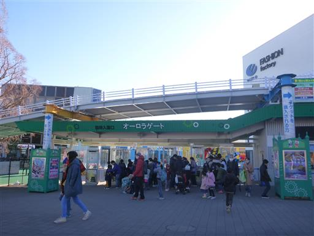
予定の10時より10分ほど前倒しして開園する。
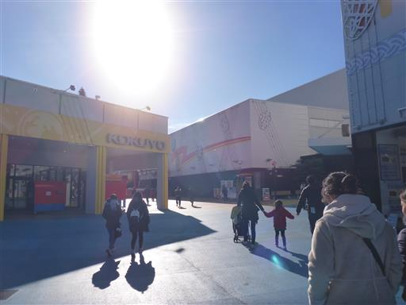
巨大なやかん。かなり迫力がある。
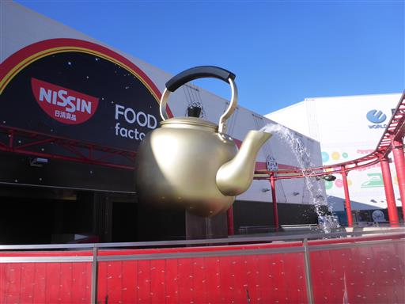
まずは人気のスプラッシュU.F.O.に向かう。
すでに15分ほどの待ちが発生。
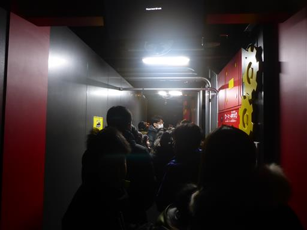
水の上を高速に移動するアトラクションで運が悪いと結構濡れる。
息子も娘もあまり怖がらず楽しんでいた。
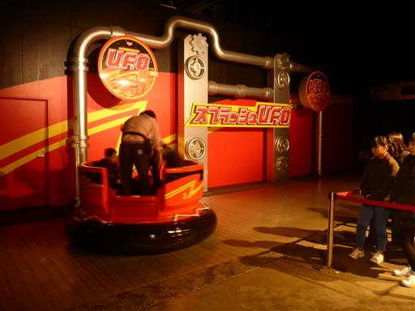
次はスピンランウェイ。こちらも人気のアトラクションだ。
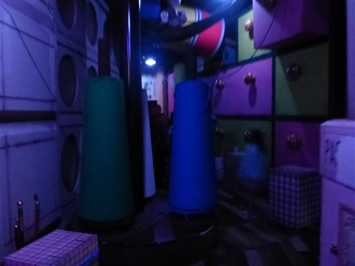
こちらは30分待ち。暖かい屋内で待てるのはありがたい。
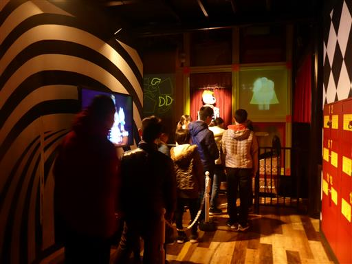
家族で乗れる人気のアトラクション2つに乗ったら、
外に出て昔ながらの遊園地ゾーンに向かう。
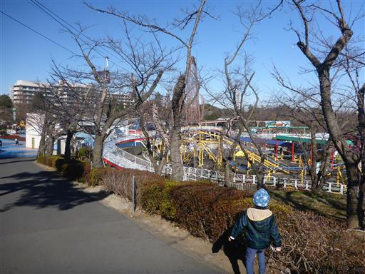
ここで二手に分かれて、自分と娘は遊園地最大のジェットコースター・バンデットに向かう。
息子は身長が足りないので、妻と別のジェットコースターに向かう。
娘は並んでいる時に「怖いから乗らない」と言っていたが、結局乗ることができた。
かなり古い代物だが、最高速度110km/hでオープン当初は世界最速だったらしい。
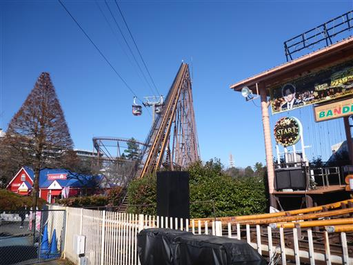
ジェットコースターを終え、妻と息子を探す。
途中で娘は乗り物に引っかかっている。
娘はなぜか未だにこういうものに興味を示す…
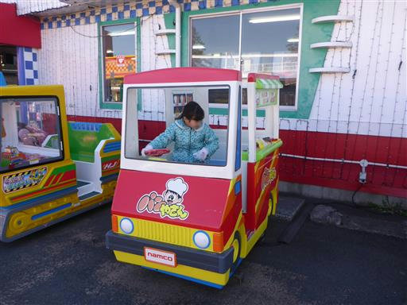
よみうりランドのマスコットキャラクター。
読売が運営している遊園地だが、園内に読売ジャイアンツに
関連のありそうなものは見当たらない。
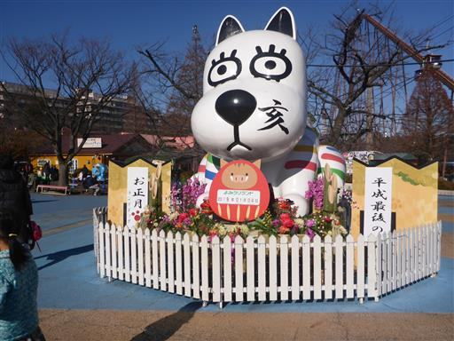
息子と合流し、メリーゴーランドに乗る。
ジェットコースターは怖くなかったそうだが「すっごい待ってすぐ終わった」らしい。
待つのはもう嫌みたいなので、ここからは待たずに乗れるものを中心に遊ぶことにする。
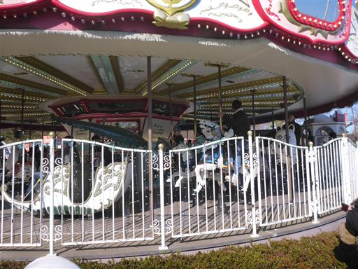
遊園地の定番、観覧車。
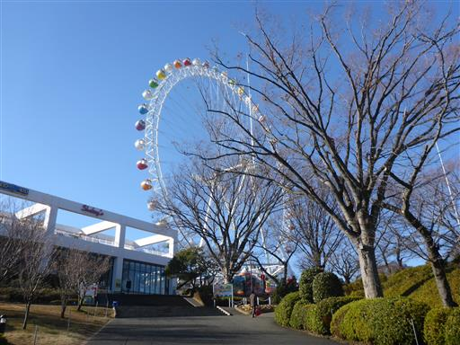
最上部付近まで上がってくる。息子は「すっごいゆっくり」と言っている。
これまで車窓から何度も観覧車を見ていたが、もっと速い乗り物だと思っていたようだ。
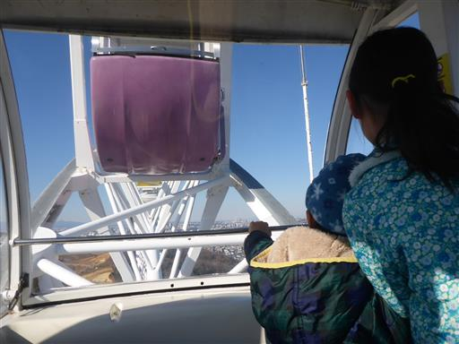
観覧車からの景色。丹沢の山々がきれいに見える。
ジェットコースターからは富士山がきれいに見えたのだが、
残念ながらもう見えなくなってしまっている。

先ほど乗ったジェットコースター。森の中を走る珍しいジェットコースターだ。
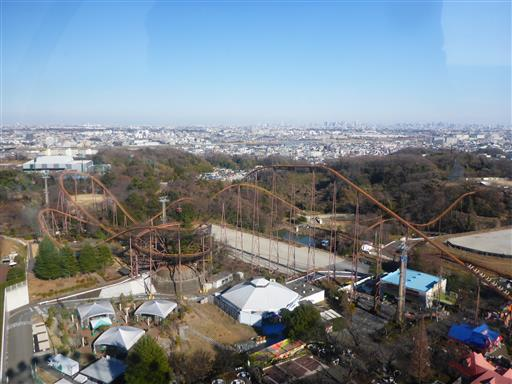
アニマルコースター。かわいい乗り物だ。
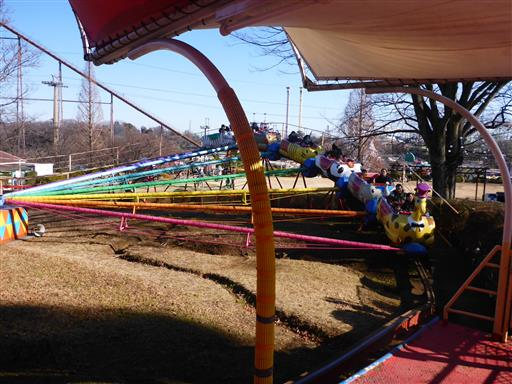
幸い先頭に座れる。ゆっくり走るのでスリルは無い。
短いコースを3周する。
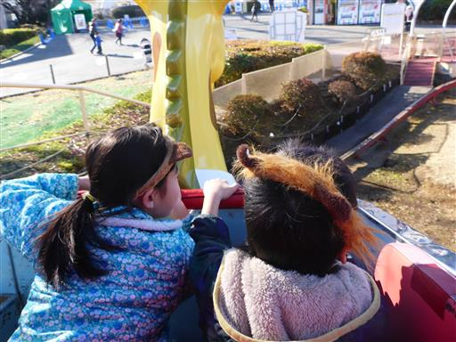
ちびっこ消防隊けしっぴー。
ボタンを押すと勢いよく水が出るので、水を火に当てる。
息子はこれが面白かったようで、帰るまでに合計3回やった。
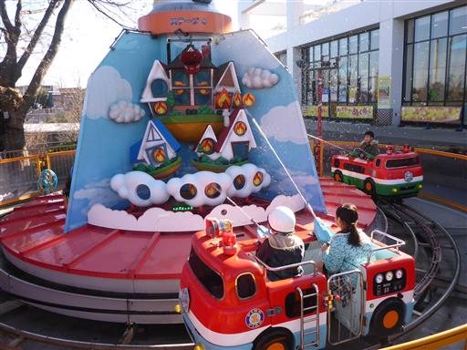
ジュラシックカー。
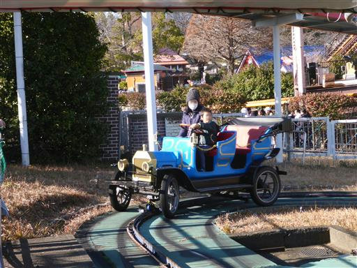
周りには多くの恐竜がいて楽しめる。
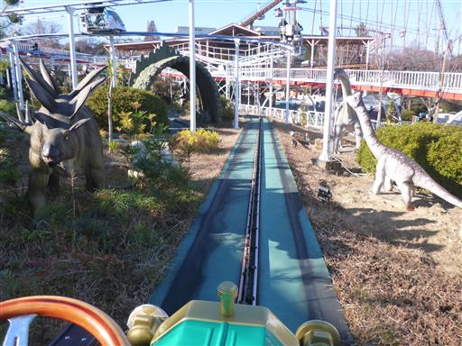
レールの上を走るだけなのだが、車にはダミーのハンドルがついている。
娘はハンドルをきって運転気分だ。
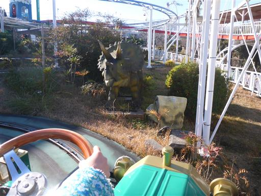
スペースジェット。
レバーを動かすと乗物が上下する。自分で動かせるのが面白い。
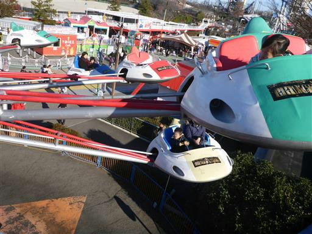
アニマルレスキュー。銃で敵を打つシューティングゲームのようなアトラクション。
最高10000点なのだが、家族4人で乗って5000点未満だった。。。
こういうのは子連れだとなかなか点数が伸びない。
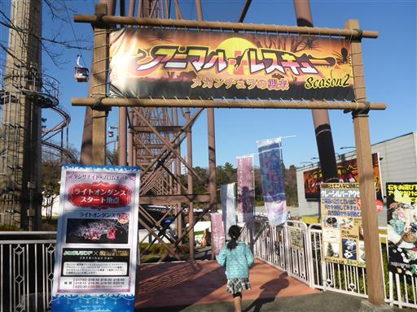
午後になり、所々でライトアップが始まる。

ちえくらべ「たまゴロー」。
常時多くのボールが転がっていて、ボールの向きを変えるなど
様々な仕掛けをクリアすると点数が入る。
赤チーム対青チームで点数を競う。
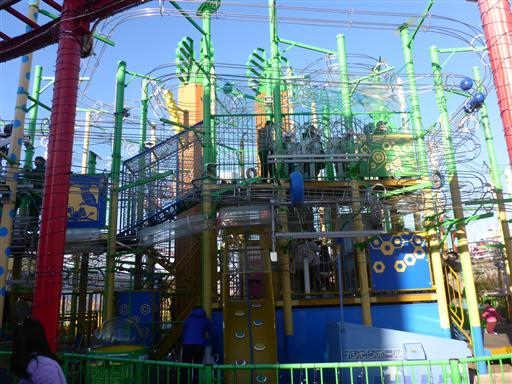
点数は赤、青ともに8000点台で、我が赤チームが僅差の勝利。
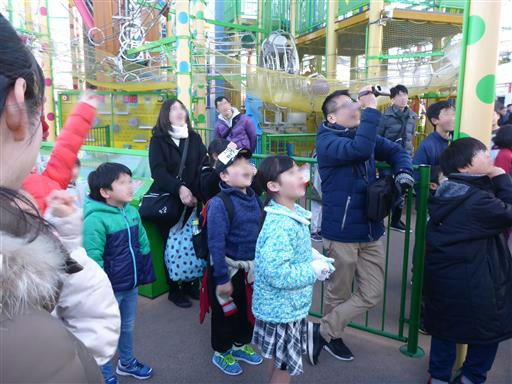
スピンドライブ。ドリフト体験ができると書かれていたが、
タイヤは宙に浮いているため、あまりドリフトっぽい感じはしない。
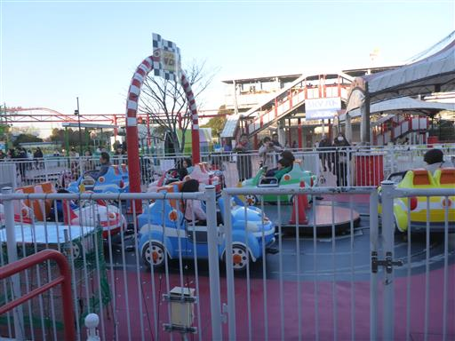
ぐるぐるドライブ。身長130cm未満なので大人は乗れない。残念。
息子を乗せて外から眺める。
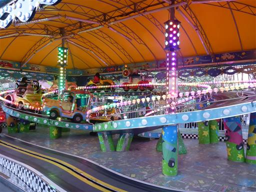
日が暮れてジェットコースターが空いていたらもう1回乗ろうと思っていたが、
逆に人が増えているので断念する。
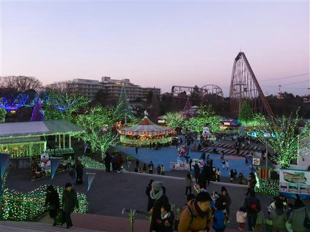
夕方～夜はイルミネーションがきれいだ。
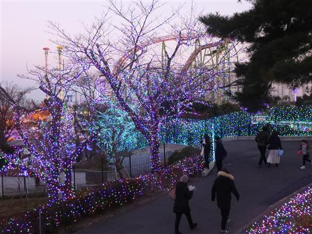
プールサイド。夏はプールを営業しているが、
冬もイルミネーションで効果的に活用されている。
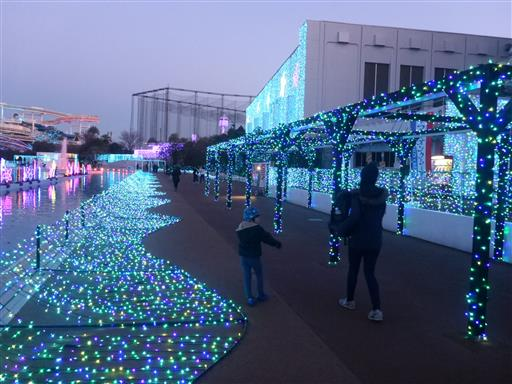
スケートリンク。今回は遊園地目的で来たのでパス。
もうちょっと広い方が滑りやすそうだ。
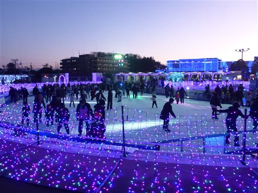
噴水ショーがあるので見に行くことにする。
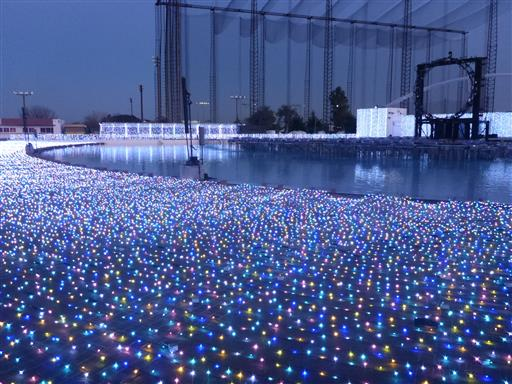
噴水ショーが始まる。水と光の演出は美しく見ていて飽きない。
ただ、背景のゴルフ場のネットが無粋だ。
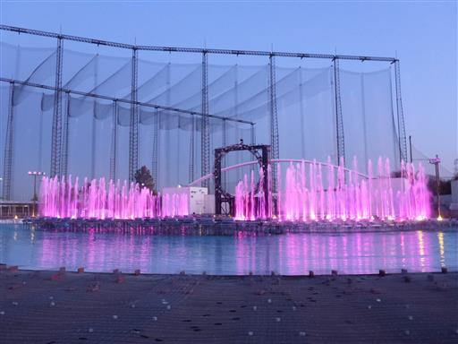
円形の噴水。始めて見た形の噴水だが、
外側を向いたり内側を向いたりで、なかなか面白い。
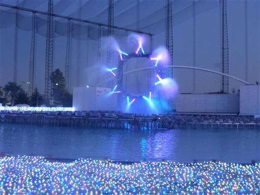
プールサイドを通って再び遊園地エリアに戻る。
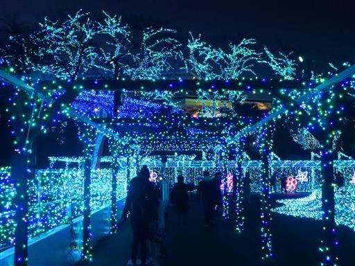
17時を超えてもう真っ暗。
プールのイルミネーションがさらにきれいに輝く。
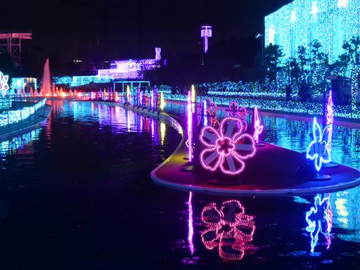
遊園地エリアに戻ってくる。たくさんの光で満ちていて華やかだ。
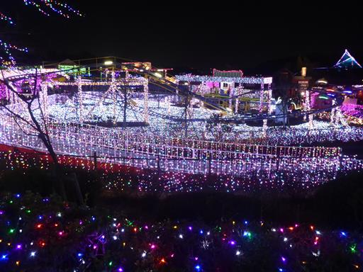
ダンスショー。踊っている人の衣装も光っている。
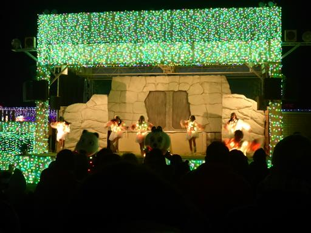
そろそろ帰ろうかと思っていたら、息子が観覧車に乗りたいと言い出す。
人が並んでいても待つと言っているので、再び行ってみることにする。

昼間はガラガラだったが、夜は多くの人が訪れている。
待ち時間は30分程度。
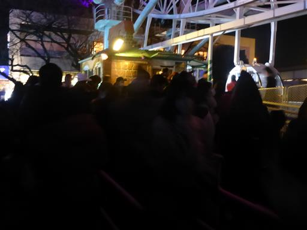
観覧車から眺める遊園地。まさに夢の世界だ。
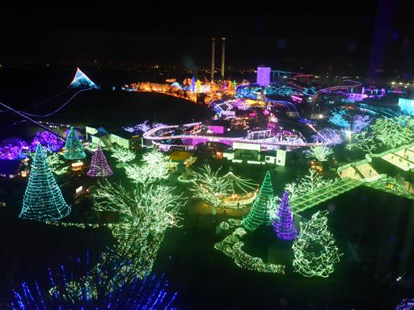
ジェットコースターもライトアップされている。
夜に乗ったらどのような景色が広がるのだろう？
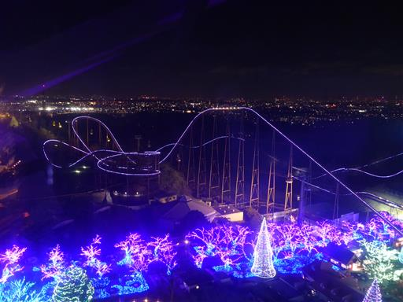
夜景。ちょっと都心部から離れているので、光の量は少ない。
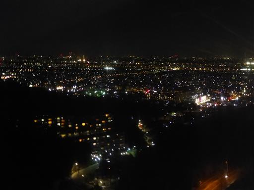
観覧車から下りてもまだ遊ぶという。こちらはわんぱく鉄道オリヴァー。
イルミネーションの中、汽車が進む。
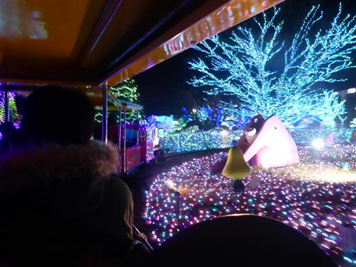
さらに最後にもう一度ちびっこ消防隊けしっぴー。
幼児向けのアトラクションはもう待たずに乗れる。
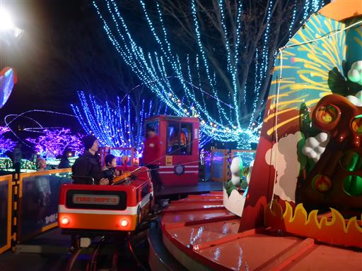
時刻は18時半。夜まで遊び倒してようやく帰宅する。
帰りの車で息子は即寝ていた。疲れたのだろう。
ジェットコースターよりも幼児向けのアトラクション中心になってしまったが、
子供たちは十分に楽しんでいた。
少々の時間であれば待つこともできるようになり、子供たちの成長が感じられた。
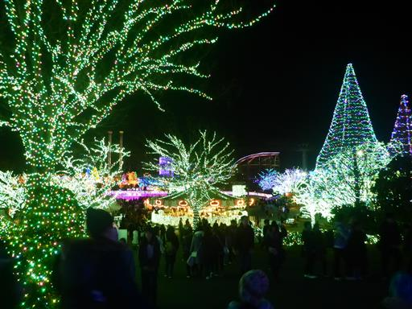